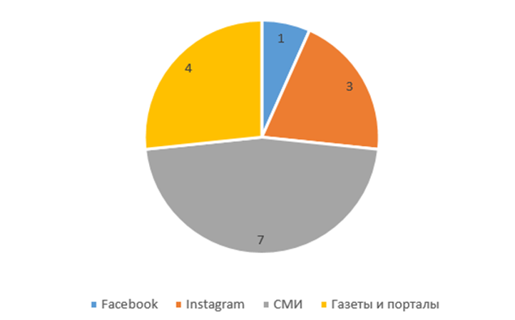

В рамках стратегии по содействию взаимодействию между научным и бизнес сообществами были проведены значимая серия мероприятий с целью создания коммуникационной площадки. Эти мероприятия включали в себя форумы, ивенты, встречи, круглые столы, обучающие семинары, мастер классы и слет молодых ученых.
Важную роль в развитии инноваций, росте экономики и создании новых перспективных решений. Организация коммуникационной и диалоговой платформы для эффективного взаимодействия этих двух сфер является краеугольным камнем успешного развития обеих сторон. В рамках такой площадки возможно создание уникального форума, где представители научного сообщества могут обмениваться своими исследованиями, новыми технологиями и находками, а представители бизнеса – выявлять потенциал для их коммерциализации, адаптации и применения на практике.
Целью данной инициативы является стимулирование инноваций, развитие новых технологий и построение устойчивых партнерских отношений между учеными и представителями бизнеса. Кроме того, создание такой платформы способствует не только обмену информацией, но и установлению долгосрочных партнерств, что может привести к созданию новых продуктов, услуг и решений, отвечающих потребностям рынка и общества в целом.
Организация коммуникационной/диалоговой площадки между научным и бизнес-сообществами представляет собой важный шаг к совместному развитию, инновациям и созданию благоприятной среды для эффективного взаимодействия и роста обеих сторон.
Рисунок 5.4.1
Ппубликации по результатам организованных коммуникационных/ диалоговых площадок, научных мероприятии между научным и бизнес сообществами.
Организованные коммуникационное-диалоговые площадки, мероприятий Академии между научными и бизнес сообществами:
1. Диалоговая TCP площадка на тему: «Проблемы коммерциализации РННТД в сфере АПК»: в ходе мероприятия участники обсудили перспективы продвижения высокотехнологичной продукции и результатов проектов коммерциализации технологий в сфере агропромышленного комплекса. Обсуждены проблемы коммерциализации технологий в сферах растениеводства, животноводства, ветеринарии, переработки с\х сырья, автоматизации сельскохозяйственных процессов и другие. Руководитель и специалисты АО «Фонд науки» рассказали о механизмах грантового финансирования проектов коммерциализации РННТД, а также по проводимой работе по интеграции науки и бизнеса. В завершении встречи обсуждены перспективы сотрудничества и коммерциализаций научных результатов в сфере АПК. По итогам выработаны рекомендации.
2. Семинар по грантовому финансированию науки с участием АО "Фонд науки и Бірлік” в Доме Дружбы: Обучение и консультации по процессу получения грантов для научных исследований, способствующие привлечению финансирования для научных проектов.
В ходе мероприятия участники с большим интересом обсудили множество перспектив, связанных с продвижением продукции высоких технологий и готовых к коммерциализации проектов в различных отраслях. Рукововодитель и эксперты АО "Фонд науки" представили подробную информацию о сложившихся механизмах грантового финансирования проектов коммерциализации результатов научно-технического развития (ННТД). Они также поделились деталями текущих инициатив по интеграции научных и бизнес-аспектов, способствующих более эффективному взаимодействию между сферой науки и предпринимательским сообществом.
В завершение встречи участники активно обсудили широкий спектр перспектив сотрудничества и коммерциализации научных достижений. Этот конструктивный диалог привел к формулированию конкретных и разносторонних рекомендаций, охватывающих различные аспекты сотрудничества, начиная от улучшения механизмов финансирования и заканчивая развитием стратегий интеграции для достижения совместных целей в области науки и бизнеса.
3. Диалоговая площадка по интеграции науки и бизнеса «Medtech Реактор коммерциализации технологий»: Мероприятие, организованное Фондом науки на площадке КазНМУ имени С.Д. Асфениярова в рамках Международного форума Asfen Forum, направленное на интеграцию научных разработок в сферу бизнеса, особенно в медицинской технологии.
5 июня 2023 года на базе КазНМУ имени С.Д. Асфендиярова прошел 1-й Международный форум «Asfen.Forum, новое поколение-2023» (далее – Форум), ориентированный на объединение академических сообществ, исследователей и молодых ученых для обмена информацией, опытом и результатами исследований в области здравоохранения с целью вдохновения и мотивации творческой деятельности молодого поколения.
Цель данного Форума заключается в обмене идеями и укреплении сотрудничества между зарубежными и отечественными партнерами в области инноваций и высоких технологий в здравоохранении через представление результатов исследований и практического опыта международному сообществу. Также акцент делается на обсуждении последних передовых инновационных разработок, достижений, тенденций, практических проблем и вызовов, с которыми исследователи и бизнес-партнеры сталкиваются в период реализации идей.
Основной задачей Форума является создание площадки для нетворкинга и установления совместных связей между учеными профессионалами-практиками с целью долгосрочного сотрудничества в рамках интеграции образования, науки, практики и бизнеса. В рамках дополнительных инициатив Форума также предусмотрены научные выставки, способствующие более глубокому взаимодействию и обмену опытом, а также подписание меморандумов для дополнительного укрепления международных связей в области здравоохранения.
4. QazScience: слет молодых ученых: в процессе работы мероприятии приняли участие молодые ученые из разных регионов страны, представители бизнеса, председатели разных ассоциации фермеров, крестьянских хозяйств, ветеринарных палат, предприниматели разных секторов промышленности и руководители управлении акимата Туркестанской области, также города Шымкент. Секционные заседания слета проводились на производственных базах (завод, цех, лаборатория), в которых выступили с докладами участники слета. В результате слета были подписаны трехсторонные меморандумы о сотрудничестве (бизнес, производства – Академия – университет).
5. Cеминар-совещания «Современное состояние и пути развития сельскохозяйственной отрасли»: в работе семинара-совещания приняли участие аким области Жетісу, руководители крупных ведущих НИИ, агрокомпании, предприниматели, известные казахстанские ученые. В ходе совещание были подняты вопросы п формированию, исследованию, документированию генофонда сельскохозяйственных культур и животных Жетысуского региона и его практическое использование, коммерциализация новых культур агрокомпаниям области, выращивание конкурентоспособных сортов и гибридов сельскохозяйственных культур с внедрением современных достижений биотехнологии и генной инженерии в регионы РК, улучшение существующих пород животных с дальнейшим внедрениям в мясную и молочную скотоводству, подготовка и внедрение в производство научных разработок отечественных ученых. По итогам работы семинар-совещание был открыт в Талдыкоргане научно-консультативный «Центр распространения знаний», подписан меморандум о сотрудничестве. Участники мероприятия отметили и научно обосновали, что в мировой практике интеграция «высшее образование – наука – производство» дает положительные результаты.
6. Семинар-совещание «Егінжай күні» на тему: «Укрепление связей науки и производства - требование времени». В работу «День поля» приняли участие вице-министр МСХ РК, акимы Алматинской области и Жетісу, заместители акимов Жамбылской, Туркестанской области, крупные руководители компании, фермеры и ведущие отечественные и зарубежные ученые. На выездном семинар совещании «День поля» были рассмотрены современное состояние и перспективы селекции и семеноводства сельскохозяйственных культур в регионе, научное обеспечение семеноводства сельскохозяйственных культур и механизмы развития отечественных инноваций, широкое внедрение в производство новых сортов, а также коммерциализация научных разработок селекции и семеноводства. Одним из рекомендации от участников в мероприятии было увеличение объема средств, выделяемых на местную программу 019 при поддержке местного областного акимата в направлении коммерциализации научных достижений ученых.
7. Мастер-класс «Лучшие мировые практики в трансфере технологий и коммерциализации» от известного ученого, специалиста по коммерциализации мирового уровня Kendrick Davis White. Экспертное обсуждение передовых мировых практик в области переноса технологий и успешной коммерциализации научных разработок.
8. Мастер-класс «Как подготовить успешную заявку на грант по коммерциализации технологии» Профессиональное обучение и практические рекомендации по эффективной подаче заявок на гранты для коммерциализации научных технологий.
9. Встреча с акимом города Алматы по коммерциализации научных технологий в рамках развития городской науки. Входе встречи были презентованы около 20 готовые к коммерциализации, завершенные научные проекты от ученых и разработчиков, изобретателей. В итоге был подписан меморандум и выделены финансирование научных проектов ученых на сумму более 800 млн тенге, подписан меморандум о сотрудничестве.
10. 1st BUSINESS AND SCIENCE EVENT.
В рамках мероприятия «Business and Science Event» были представлены увлекательные доклады более 10 представителей предприятий и научных организаций. Звучали отчеты о реально реализуемых и завершенных проектах, предоставляя ценные знания и опыт. Предложения, выдвинутые в ходе этого события, призваны стать устойчивой основой для дальнейших шагов в развитии сотрудничества между наукой и бизнесом в Республике Казахстан. Эти идеи и достижения будут способствовать более глубокому взаимодействию между секторами, способствуя инновациям и обогащению научного и бизнес-пространства в стране
Кроме того, в ходе мероприятия были организованы научные выставки, предоставляющие возможность более подробно изучить результаты и инновации, а также подписаны меморандумы, дополнительно укрепляя и расширяя общую картину взаимодействия между бизнесом и наукой в Республике Казахстан.
Анализ и выводы. Проведение встреч и круглых столов способствовало активным дискуссиям, выявлению актуальных проблем и поиску совместных решений. Семинары и совещания давали возможность углубленного обсуждения и проработки конкретных аспектов взаимодействия.
В проведенных мероприятиях успешное организованное взаимодействие между научным и бизнес-сообществами показало свою эффективность:
1. Обмен знаниями: Мероприятия способствовали интенсивному обмену информацией, идеями и новыми исследованиями между научными и коммерческими секторами.
2. Стимулирование инноваций: Диалог между учеными и бизнесменами стимулировал появление новых идей и инноваций, что в свою очередь обогащало обе сферы.
3. Установление партнерств: Регулярные встречи способствовали формированию долгосрочных партнерских отношений, что способствовало совместному развитию продуктов и услуг.
4. Создание устойчивых решений: в результате диалога и совместной работы были разработаны более устойчивые и эффективные решения, удовлетворяющие потребности обеих сторон.
Форумы, День поля, круглые столы, диалоговые площадки и семинар-совещании и другие мероприятия, организованные совместно с вузами, НИИ, государственными органами, инвесторами и другими партнерами, позволили выработать стратегии для развития научных исследований и их коммерциализации.
Информация по всем проведенным мероприятиям представлена в Приложении 5.4.
Все эти мероприятии способствовали интеграции науки и бизнеса, укрепление их связи для успешной коммерциализации научных технологий отечественных ученых.
Заключение. Под эгидой Академии были организованы и проведены коммуникационные-диалоговые площадки, 10 значимых серии мероприятий Академии между научными и бизнес сообществами. Эти мероприятия включали в себя диалоговые площадки, ивенты по интеграции науки и бизнеса, выставки научных разработок отечественных ученых готовых к коммерциализации, форумы, встречи, семинар-совещание, круглые столы, обучающие семинары, мастер классы содержащих профессиональных обучении и практических рекомендации по эффективной подаче заявок на гранты для коммерциализации научных технологий, дискуссии, экспертное обсуждение передовых мировых практик в области переноса технологий и успешной коммерциализации научных разработок и слет молодых ученых с участием молодых ученых из разных регионов страны, председателей разных ассоциации тепличных/крестьянских хозяйств, фермеров, ветеринарных палат, представителей разных секторов бизнеса, промышленности, руководителей управления городских/областных акиматов.
Целью данной инициативы является стимулирование инноваций, развитие инновационных технологий и построение устойчивых партнерских отношений между учеными и представителями бизнеса. Кроме того, создание такой платформы способствует не только обмену информацией, но и установлению долгосрочных партнерств, что может привести к созданию новых продуктов, услуг и решений, отвечающих потребностям рынка и общества в целом.
Организация коммуникационной/диалоговой площадки между научным и бизнес-сообществами представляет собой важный шаг к совместному развитию, инновациям и созданию благоприятной среды для эффективного взаимодействия и роста обеих сторон. В подробном отчете и в приложении имеются перечень научных мероприятий, их краткое сведения, доказательная база в виде скринов/ссылки на публикации в СМИ.